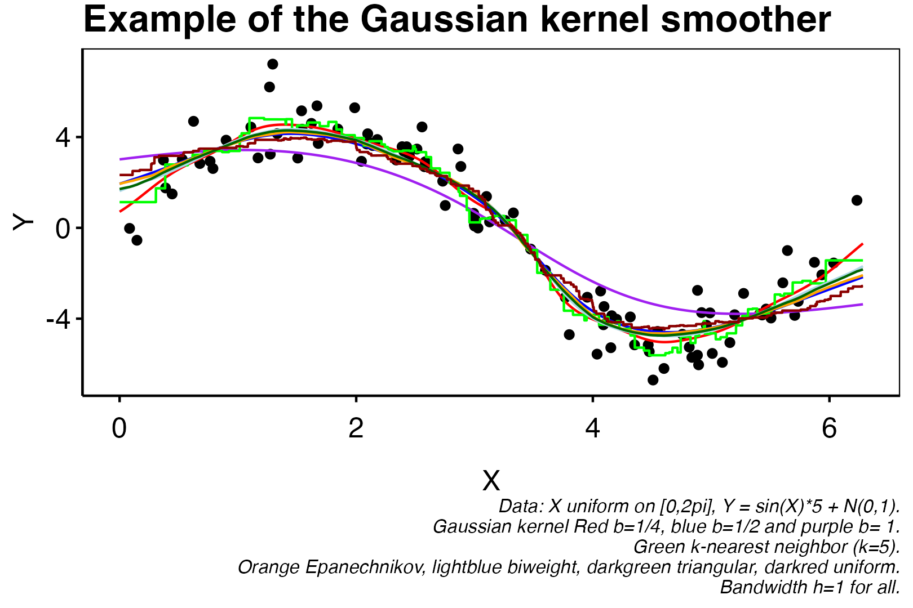

9.4 Nonparametric Regression
Linear models are quite restrictive and one may ask how one can achieve more flexibility. In this chapter we will look at the nonparametric regression problem with squared loss \(L(y_1,y_2)=(y_1-y_2)^2\). We already know that the Bayes-rule is \(m^\ast(x)=\mathbb E[Y|X=x]\).
9.4.1 Linear Smoothers
Definition. (k-nearest-neighbor) The k-nearest-neighbor estimator is
\[ \hat m^{knn}(x)= \frac 1 k \sum_{i \in \mathcal N_k(x)}Y_i, \]
where \(\mathcal N_k(x)\) contains the indices of the \(k\) closest points of \(\{X_1, \dots X_n\}\) to \(x\).
Definition. (Linear Smoother) An estimator is called linear smoother if it can be written as
\[ \hat m(x)= \sum_i w_i(x)Y_i, \]
where the weight function \(w_i\) can depend on \(\{X_1, \dots, X_n\}\).
Example. The k-nearest-neighbor estimator is a linear smoother:
\[ \hat m^{knn}(x)= \sum_i^n w_i(x) Y_i, \]
with
\[ w_i(x)=\begin{cases}\frac 1 k & X_i \ \text{belongs to the}\ k \ \text{closest points to}\ x \\ 0 & else\end{cases} \]
In the below proposition the definition of Lipschitz continuity is used. We recall that a real-valued function \(f:\mathbb R\to\mathbb R\) is \(L\)-Lipschitz continuous if and only if
\[ f(x_1)-f(x_2)\le L\Vert x_1-x_2\Vert_2 \]
for all \((x_1,x_2)\in\mathbb R^2\). This in particulat means that \(f(x)\in[f(x_1)-L\vert x_1-x\vert,f(x_1)+L\vert x_1-x\vert]\) i.e. does not on any interval grow faster that a linear function with slope \(L\).
Proposition. (MSE k-nearest-neighbor) Assume that
\[ E[Y|X=x]=m^\ast(x)\in \mathcal G_L = \{m: \mathbb R^p \mapsto \mathbb R\ |\ m \ \text{is L-Lipschitz continuous}\}, \]
and \(\textrm{Var}(Y|X=x)=\sigma^2(x)\leq \sigma^2.\) Then
\[ \mathbb E[(\hat m^{knn}(x)-m^\ast(x))^2]\leq (cL)^2 \left(\frac k n \right)^{2/p}+\frac {\sigma^2}k. \]
In particular, for \(k_n=O_p( n^{2/(2+p)})\), we get
\[ \mathbb E[(\hat m^{knn}(x)-m^\ast(x))^2]=O_p(n^{-2/(2+p)}). \]
Proof.
Write \(\mathbf X=(X_1,\dots, X_n)\) and denote by \(Y_i^{(x)}\) the \(i\)th closest \(Y\) to \(x\) among \(Y_1,\dots Y_n\). \[\begin{align*} \mathbb E[(\hat m^{knn}(x)-m^\ast(x))^2]& \stackrel{(\dagger_1)}{=}\mathbb E \Big [{\left(\mathbb{E}[\hat m^{knn}(x)|\mathbf X]-m^\ast(x)\right)^2}\Big]+{\mathbb{E}\Big[(\hat m^{knn}(x)-\mathbb{E}[\hat m^{knn}(x)|\mathbf X])^2\Big]}\\ &\stackrel{(\dagger_2)}{=}\mathbb E\left[ \Big \{\frac{1}{k} \sum_{i \in \mathcal{N}_k(x)}\left(m^\ast\left(X_i\right)-m^\ast(x)\right)\Big \}^2\right] \\ &+ \frac 1 {k^2} \mathbb E \left[ \sum_i^k \sum_j^k \{Y_i^{(x)}- \mathbb E[Y_i^{(x)}| \mathbf X]\}\{Y_j^{(x)}- \mathbb E[Y_j^{(x)}| \mathbf X]\} \right] \\ &\stackrel{(\dagger_3)}{\leq} \mathbb E\left[ \left(\frac{L}{k} \sum_{i \in \mathcal{N}_k(x)}\left\|X_i-x\right\|_2\right)^2 \right]+\frac{\sigma^2}{k} \\ &\stackrel{(\dagger_4)}{\leq} L^2 c \left(\frac k n \right)^{2/p}+\frac {\sigma^2}k \end{align*}\] where we as usual in \((\dagger_1)\) use that \(m^*(x)-Y\) is orthogonal to any element \(m(x)-m^*(x)\). In the \((\dagger_2)\) we use the assumption that \(m^*(x)=\mathbb E[Y\vert X=x]\) and hence
\[ \mathbb E\left[\left. \hat m^{knn}(x)\right\vert X\right]=\frac{1}{k}\sum_{i\in \mathcal N_k(x)}\mathbb E\left[\left. Y_i\right\vert X \right]=\frac{1}{k}\sum_{i\in \mathcal N_k(x)}m^*(X_i). \]
Furthermore, the second term is derived from the below \[\begin{align*} \mathbb{E}\left[(\hat m^{knn}(x)-\mathbb{E}[\hat m^{knn}(x)|\mathbf X])^2\right]&=\mathbb{E}\left[\left(\frac{1}{k}\sum_{l\in \mathcal N_k(x)}Y_l-\frac{1}{k}\sum_{i\in \mathcal N_k(x)}\mathbb E\left[\left. Y_i\right\vert X \right]\right)^2\right]\\ &=\frac 1 {k^2} \mathbb E \left[ \sum_i^k \sum_j^k \{Y_i^{(x)}- \mathbb E[Y_i^{(x)}| \mathbf X]\}\{Y_j^{(x)}- \mathbb E[Y_j^{(x)}| \mathbf X]\} \right] \end{align*}\] The \((\dagger_3)\) is derived by the definition of a \(L\)-Lipschitz function and the assumption regarding the variance of the conditional variable \(Y\ \vert\ X=x\). \((\dagger_4)\) is a result taken from Gyorfi et al. 2002, vol. 1, chap. 6.3. \(\blacksquare\)
Note that this is slower than the “parametric” MSE of \(n^{-1}\). In particular the rate depends on \(p\). Even worse: It grows exponentially in \(p\).
We have learned that the knn estimator can be written as
\[ \hat m^{knn}(x)= \frac 1 k w_i(x_i) Y_i, \]
Note that \(w_i(x)\) is not smooth as a function of \(x\). This also makes the estimator not smooth. Given that we assume that \(m^\ast\) is smooth, this may not be desirable. An alternative are kernel smoothers.
Definition. (Kernel Smoother) The kernel smoother is a linear smoother with
\[ \hat m^{ks}(x)= \sum_i w_i(x_i) Y_i, \]
where
\[ w_i(x)=\frac{K\left(\frac{||x-X_i||}{h}\right)}{\sum_j K\left(\frac{||x-X_j||}{h}\right)} \]
Often \(K=\prod_j k_j\), such that \(K\left(\frac{||x-X_i||}{h}\right)=\prod_j k(x-X_{ij})\). The function \(k: \mathbb R \mapsto \mathbb R\) is usually a symmetric density function.

The general idea is to fit a smooth function to the data points \((X,Y)\) such that \(m(X)\) is somewhat centered between the data points. The choice of a symmetric function \(k\) ensures that the estimator weighs the datapoints closer to \(x\) higher than further away data point. In the case with \(X,Y\in \mathbb R\) we can choose for instance
- Gaussian kernel: \(k_j(z)=\exp\left(\frac{z}{2b^2}\right)\) with \(b>0\),
- Uniform kernel: \(k_j(z)=1_{[0,1]}(z)/2\in \{0,1\}\),
- Triangular kernel: \(k_j(z)=\big(1-z\big)^+\),
- Epanechnikov kernel: \(k_j(z)=\frac{(1-z^2)^a}{2^{2a+1}\Gamma(a+1)^2\Gamma(2a+2)^{-1}}1_{[0,1]}(z)\) with \(a=1\).
- Biweight kernel: Above with \(a=2\).
where of course the argument is \(z=\vert x-X_{ij}\vert/h\) with \(h>0\) being the bandwidth. Notice that the uniform kernel in fact is the Epanechnikov kernel with \(a=0\).
Proposition. (MSE Kernel Smoother) Assume that \(E[Y|X=x]=m^\ast(x)\in \mathcal G_L\) with
\[ \mathcal G_L = \{m: \mathbb R^p \mapsto \mathbb R\ |\ m \ \text{is L-Lipschitz continuous}\}, \]
and \(\textrm{Var}(Y|X=x)=\sigma^2(x)\leq \sigma^2.\) Then
\[ \mathbb E[(\hat m^{ks}(x)-m^\ast(x))^2]= O_p\left( \frac{1}{nh^p} + h^2 \right) \]
In particular, for \(h_n=O_p(n^{-1/(2+p)})\), we get
\[ \mathbb E[(\hat m^{ks}(x)-m^\ast(x))^2]=O_p(n^{-2/(2+p)}). \]
9.4.2 Curse of dimensionality
We have seen that under a Lipschitz condition, both kernel smoother and knn have an asymptotic mean squared error of order \(n^{-2/(2+p)}\). One can show that under the assumption that \(m^\ast\) is twice continuously differentiable, the rate for both methods can be improved to
\[ n^{-4/(4+p)}. \]
But this rate is still exponentially decreasing in \(p\). Furthermore, it has been shown that no method can do better under the given assumptions.
A new observation \(x_0\) will have very few or no observations in its neighborhood. This leads to high variance and high bias when increasing the size of the neighborhood.
Under the model in the previous section, the setting \(n=50,p=1\) has the same expected amount of observations in a neighborhood as the setting \(n=7.5\times10^{110}, p=100\).
There are two ways to tackle the curse of dimensionality.
Sparsity: Assume that the intrinsic dimension is lower. E.g. Not all variables are relevant. Or feature engineer a few highly predictive variables.
Structure: Interactions are limited and structure can be exploited e.g. an additive structure \(m(x)=m_1(x_1)+m_2(x_2)\). Remember that structure is essential for interpretability.
9.4.3 Splines
We want to establish a framework to estimate additive regression functions. To this end, assume \(p=1\) until further notice.
Definition. (Splines) Consider a function \(S : \mathbb R\to \mathbb R\). If
\[ S(t)=\sum_{i=1}^\ell 1_{[t_{i-1},t_i)}(t)P_i(t), \]
for a family of polynomial functions \(\{P_i\}_{i=1,...,\ell}\) of at most order \(k\). If \(S(t)\) is \(C^n\) (\(n\ge 1\)) we say that \(S\) is a \(k\)th-order spline with \(\ell\) knotpoints and smoothness \(n\). We call \(t_0<t_1<\cdots <t_\ell\) for knotpoints.
Example. (Truncated Power Basis) A \(k\)th-order spline \(m\) with \(l\) knotpoints can an be uniquely written as
\[ m(x)=\sum_{j=1}^{k+1+l}\theta_jg_j(x) \]
For \(j=1,\dots, k+1\): \(g_{j}=x^{j-1}\) and for \(j=1,\dots,l:\) \(g_{k+1+j}=(x-x_j)^k_+\). We call this the truncated power basis. Note that \(\theta_j\) is some indicator function.
Splines have high variance at the boundaries. Solution: Let the piecewise polynomial function have a lower degree at \((-\infty,x_1],[x_l,\infty)\).
Definition. (Natural Splines) Consider a \(k\)th order spline \(S\), \(k\) odd, with smoothness \(k-1\) defined for the knotpoints \(t_0,...,t_\ell\). We say that \(S\) is a natural spline of order \(k\) if \(S\) is a \(C^{(k-1)/2}\) on \((-\infty,t_0)\cup (t_\ell,\infty)\).
Note that natural splines have dimension \(l\) which is in particular independent of the order \(k\) (compare to dimension \(k+l\) for splines). There is also a truncated power basis and a B-splines basis for natural splines. An example is the cubic spline which is a 3rd order natural spline. One can find a unique solution to the problem of fitting a natural cubic spline to a dataset \(\{(x_i,y_i)\}_{i=1,...,n}\). Furthermore, this interpolated function minimizes \(\int_{x_0}^{x_n} (f''(x))^2\ dx\). Which makes this interpolation tractable.
9.4.4 Linear regression with splines.
We still assume the one-dimensional case, \(p=1\). Instead of looking at observations \((X_i,Y_i)_{i=1,\dots,n}\) we can consider a natural splines basis and look at observations \((g_1(X_i), \dots, g_l(X_i), Y_i)_{i=1,\dots,n}.\) By doing so we are able to approximate any natural spline in \(x\) instead of just linear functions in \(x\), while still being in a linear regression framework, i.e.,
\[ \hat \beta = {\arg \min }_\beta \sum_i (Y_i - { G_i^T}\beta )^2= (\mathbf G^T\mathbf G)^{-1}\mathbf G^T\mathbf Y \]
where \(G_i^T=(g_1(X_i), \dots, g_l(X_i))\), the rows of \(\mathbf G\). Problem: How do we choose the number of knotpoints \(l\) and their position? First thought: Cross validation. But that would be quite expensive to run.
Let us look at the following minimization problem:
\[ \hat m= \arg\min_{m} \sum_i (Y_i-m(X_i))^2+\lambda\int_a^b m''(x)^2\mathrm dx, \]
where minimization runs over all twice times differentiable functions \(m\) and observations \(X_i\) are in \([a,b]\) for all \(i\).
Theorem (Smoothing splines) If \(m\) is twice differentiable and the solution to
\[ \arg\min_{m} \sum_i (Y_i-m(X_i))^2+\lambda\int_a^b m''(x)^2\mathrm dx, \]
then \(m\) is a natural spline of order 3 (natural cubic spline).
Proof.
Consider a dataset \(\mathcal D_n=\left\{(X_i,Y_i)\right\}_{i=1,..,n}\) orderet such that \(X_1\le X_2\le \cdots \le X_n\). Let \(m^*\) be the minimizer to the minimization problem
\[ m^*=\underset{m\in\mathcal G}{\text{arg min}}\left\{\sum_i (Y_i-m(X_i))^2+\lambda\int_a^b m''(x)^2\mathrm dx\right\}, \]
for \(\mathcal G\) being the class of \(C^2\) functions and \(\lambda\ge 0\) be given. We know from earlier that the cubic spline does indeed minimize the integral above and so if \(m(X_i)=Y_i\) for all \(i\) then we will have a minimizer. Let us for good measure show that the cubic spline fitted to the dataset \(\mathcal D_n\), call it \(\tilde m\), is indeed the minimizer.
Let \(\tilde m\) be the unique natural cubic spline interpolated to the points \(\mathcal D_n\). This in particular gives that \(X_1,...,X_n\) are knotpoints for \(\tilde m\) and so we have
\[ m(X_i)=Y_i,\quad m^{(3)}(X_i)=0,\quad \forall x\notin [X_1,X_n]:m''(x)=0. \]
Assume that \([X_1,X_n]\subset [a,b]\). By now we already have
\[ \sum_i(Y_i-\tilde m(X_i))^2=0\le \sum_i(Y_i-m^*(X_i))^2, \]
and so if we show that
\[ \int_a^b(\tilde m''(x))^2\ dx\le \int_a^b({m^*}''(x))^2\ dx, \]
then \(\tilde m=m^*\). In particular we have to show that
\[ 0\le \int_a^b({m^*}''(x))^2\ dx-\int_a^b(\tilde m''(x))^2\ dx. \]
We start by seeing that
\[ (a-b)^2=a^2+b^2-2ab=a^2+2b^2-2ab-b^2=a^2-2(a-b)b-b^2 \]
hence
\[ \int_a^b\left({m^*}''(x)-\tilde m''(x)\right)^2\ dx=\int_a^b({m^*}''(x))^2\ dx-\int_a^b(\tilde m''(x))^2\ dx-2\int_a^b\tilde m''(x)({m^*}''(x)-\tilde m''(x))\ dx \]
and so if the last term is zero, then we would trivially have
\[ \int_a^b({m^*}''(x))^2\ dx-\int_a^b(\tilde m''(x))^2\ dx=\int_a^b\left({m^*}''(x)-\tilde m''(x)\right)^2\ dx\ge 0 \]
as desired. Define \(h=m^*-\tilde m\) then we have
\[ \int_a^b\tilde m''(x)({m^*}''(x)-\tilde m''(x))\ dx=\int_a^b\tilde m''(x)h''(x)\ dx. \]
Since \(\tilde m''=0\) for all \(x\notin [X_1,X_n]\), the bound can be moved in and so by using integration by parts we have \[\begin{align*} \int_a^b\tilde m''(x)h''(x)\ dx &=\sum_{i=1}^{n-1}\int_{X_i}^{X_{i+1}}\tilde m''(x)h''(x)\ dx \\ &=\sum_{i=1}^{n-1}\left[\tilde m''(x)h'(x)\right]_{X_i}^{X_{i+1}}-\int_{X_i}^{X_{i+1}}\tilde m'''(x)h'(x)\ dx \\ &\stackrel{(\dagger_1)}{=} -\sum_{i=1}^{n-1}\int_{X_i}^{X_{i+1}}\tilde m'''(x)h'(x)\ dx\\ &\stackrel{(\dagger_2)}{=} -\sum_{i=1}^{n-1}\tilde m'''(X_i)\int_{X_i}^{X_{i+1}}h'(x)\ dx\\ &=-\sum_{i=1}^{n-1}\tilde m'''(X_i)\left[h(x)\right]_{X_i}^{X_{i+1}}\\ &=-\sum_{i=1}^{n-1}\tilde m'''(X_i)(m^*(X_{i+1})-\tilde m(X_{i+1})-m^*(X_i)+\tilde m(X_i))\\ &\stackrel{(\dagger_1)}{=}0 \end{align*}\] where we used that \(h=0\) on \(x\in\{X_i\}_{i=1,...,n}\) (\(\dagger_1\)) twice and that \(m'''\) is constant (\(\dagger_2\)). Then we have shown the desired equality hence
\[ \int_a^b(\tilde m''(x))^2\ dx\le \int_a^b({m^*}''(x))^2\ dx \]
as desired. \(\blacksquare\)
We can conclude the following:
- Let \(\mathbf G\) be the matrix with with rows \(G_i=(g_1(X_i), \dots, g_l(X_i))\).
- \(\{g_j\}_{j=1,\dots,l}\) is a basis for natural cubic splines.
- Define \[\hat \beta = \arg\min_{\beta} \sum_i (Y_i- G_i^T\beta)^2+\lambda\int_0^1 \left\{{\sum_j \beta_jg_j''}(x)\right\}^2\mathrm dx.\] Then, \[\sum_j \hat \beta_j g_j=\arg\min_{m} \sum_i (Y_i-m(X_i))^2+\lambda\int_0^1 m''(x)^2\mathrm dx.\]
Smoothing splines can be seen as a special case of generalized ridge regression:
- Write \(\mathbf W_{ij}=\int_0^1g_i''(x)g_j''(x)\mathrm dx,\) then \[\begin{align*} &\arg\min_{\beta} \sum_i (Y_i- G_i^T\beta)^2+\lambda\int_0^1 \left\{{\sum_j \beta_jg_j''}(x)\right\}^2\mathrm dx\\= &\arg\min_{\beta} \sum_i (Y_i- G_i^T\beta)^2+\lambda \beta^T \mathbf W \beta. \end{align*}\] Hence, \[ \hat \beta= (\mathbf G^T\mathbf G+\lambda \mathbf W)^{-1}\mathbf G^T\mathbf Y. \]
It can be shown the smoothing splines are asymptotically equivalent to kernel smoothers with varying bandwidth and a specific choice of kernel, see Silverman (1984) or Wang, Du, and Shen (2013) for a more recent contribution. In general, smoothing splines are more practical since they can be efficiently calculated while kernel smoothers are much easier to analyze theoretically.
We have seen that fully nonparametric methods suffer from the curse of dimensionality: the optimal rate of convergence for twice continuously differentiable functions is \(n^{-4/(4+p)}\). One solution is to restrict oneself to the class of additive functions
\[ \mathcal G=\{m\ |\ m(x)=m_1(x_1)+\cdots +m_p(x_p)\} \]
Stone (1985) showed that the components \(m_k\), if twice continuously differentiable, can be estimated with one-dimensional rate of \(n^{-4/(4+p)}\). The components \(m_j\) are usually estimated via the so called backfitting algorithm (Hastie and Tibshirani 1990).
Backffitting comprises the following two steps:
Definition. (Backfitting Algorithm)
- Intialize: \(\hat m_j^{[0]}=0, j=1,\dots,p\)
- Iterate for \(r=1,\dots\)
- Residuals: \(r_{ij}^{[r]}=Y_i-\sum_{k < j} \hat{m}_{k}^{[r]}(x_{ik})-\sum_{k > j} \hat{m}_{k}^{[r-1]}(x_{ik})\).
- Smooth: \(\hat{m}_j^{[r]}=\operatorname{Smooth}\left(\left\{X_{ij},r_{ij}^{[r]}\}_{i=1,\dots,n}\right\}\right).\)
- Center: \(\hat{m}_j^{[r]}=\hat{m}_j^{[r]}-\frac{1}{n} \sum_{i=1}^n \hat{m}_j^{[r]}\left(X_{i j}\right)\).
Note that Smooth is a one-dimensional regression problem. In practice Smooth is most often a smoothing spline. It has been shown backfitting via smoothing splines achieve optimal rate of \(n^{-4/(4+p)}\) for each component and \(pn^{-4/(4+p)}\) for the p-dimensional additive regression function.
Problem: Additive methods are still not optimal in the case of sparsity (i.e. some features being not relevant) and interactions between features.